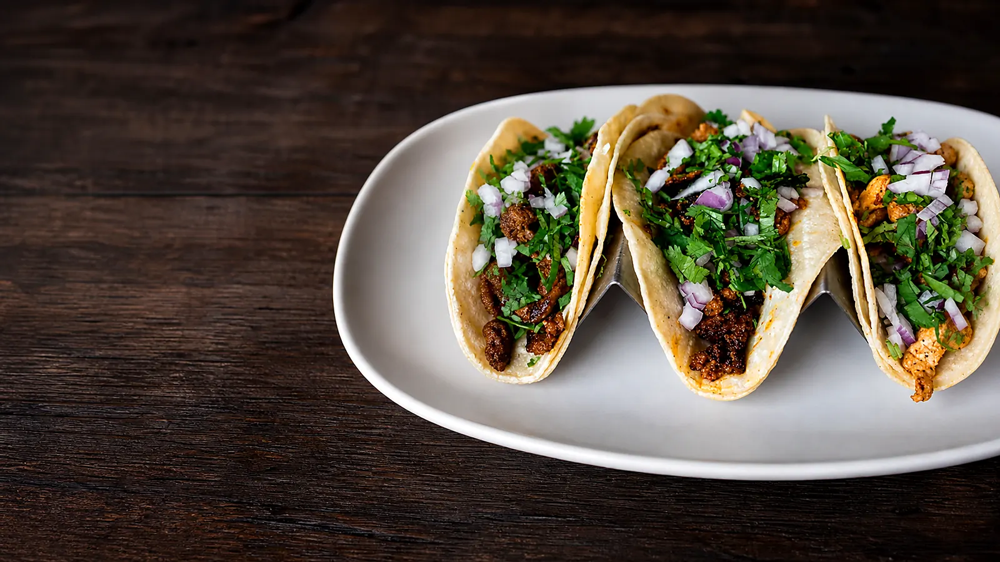
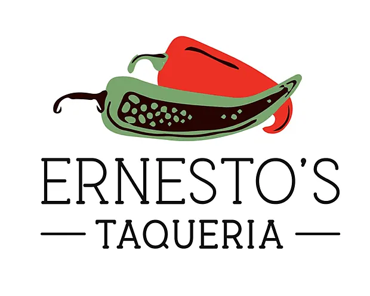
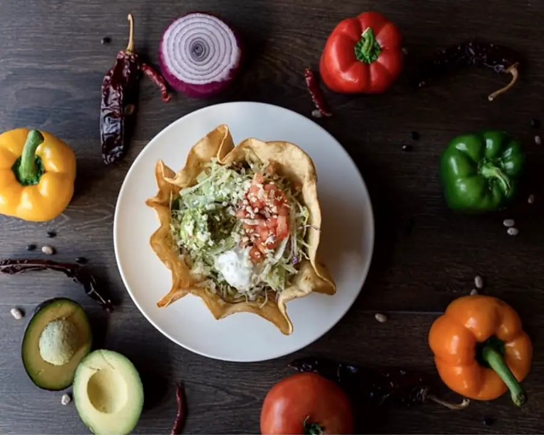
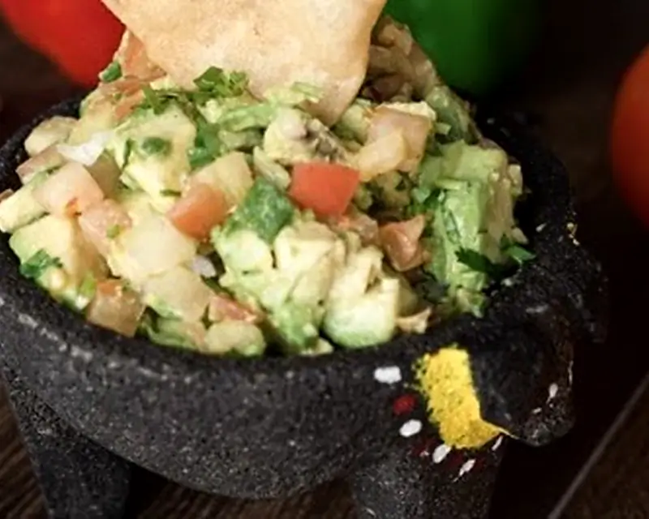
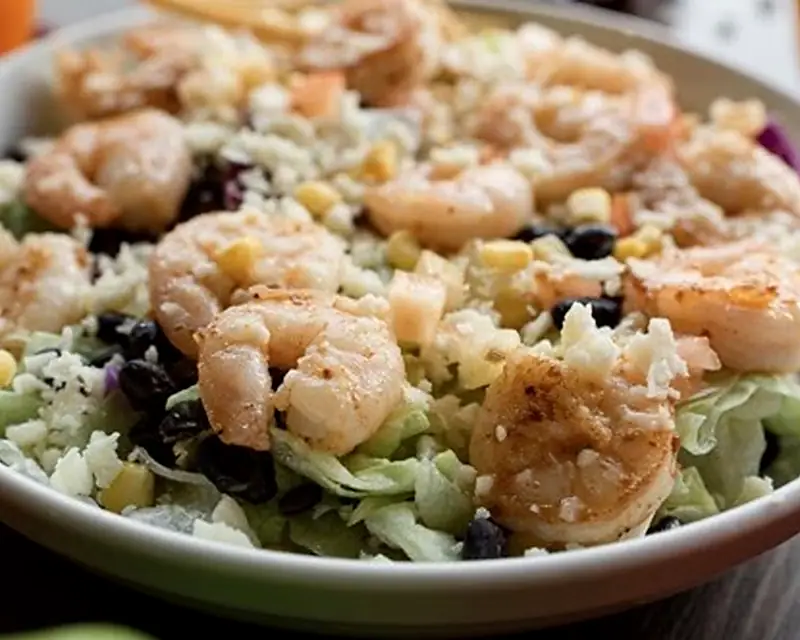
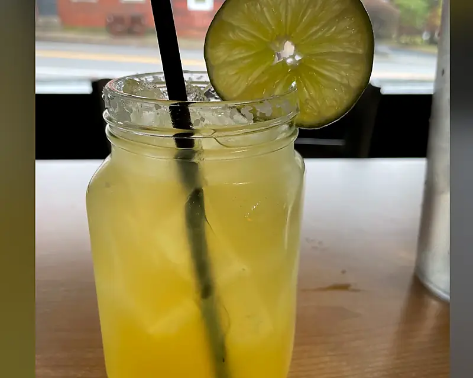

Birria Taco
Cilantro & onions
$4.50
New Castle, Kentucky · Fresh Mexican cooking
Traditional roots, modern combinations, fresh tacos and cold margaritas — made for lunch, dinner and everything after.

LOCAL · FRESH · FAMILY-FRIENDLYA small business with a big table
Ernesto’s brings traditional recipes and modern Mexican combinations to the heart of New Castle. Fresh ingredients, generous plates and a menu with something for everyone.
Come for a quick taco. Stay for a margarita. Bring the family and make it dinner.
Plan your visit →Fresh from the kitchen




Open six days
Order ahead for pickup or come in and stay awhile.
Ready when you are
Build your order on Ernesto’s verified Heartland menu.
Order on Heartland